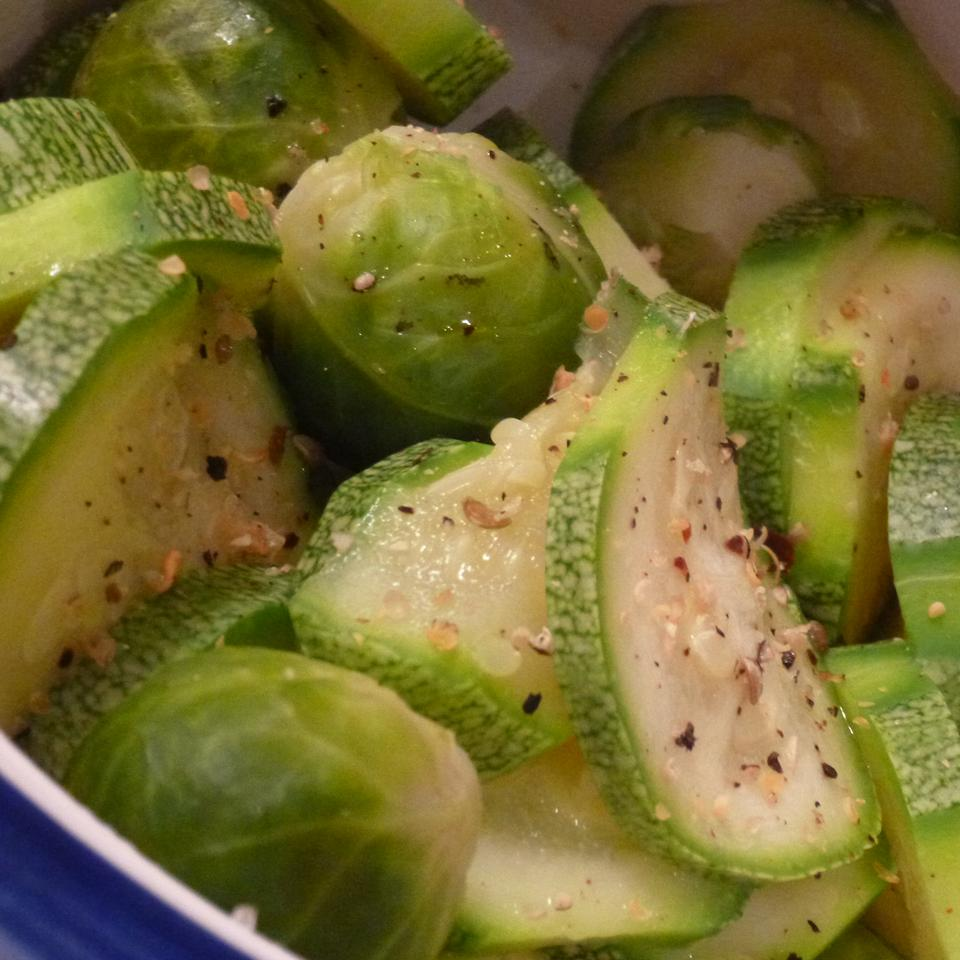

Steamed Zucchini

A quick and healthy way to make zucchini.
Ingredients
- 4 zucchini
- 2 cloves garlic
- 1 tablespoon olive oil
Steps
- Bring a large pot of water to a boil.
- Trim ends from zucchini.
- Cut each one in half, then cut each half lengthwise into quarters.
- Place zucchini and garlic into a steamer basket, then place the steamer basket into the pot.
- Steam for 10 to 15 minutes, or until the zucchini are tender.
- Transfer zucchini to a large bowl.
- Mash the garlic and put it in the bowl with the zucchini.
- Drizzle the olive oil into the bowl and toss until the vegetables are coated with oil and garlic.